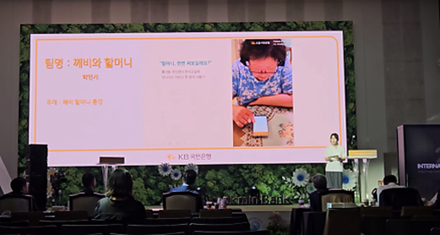
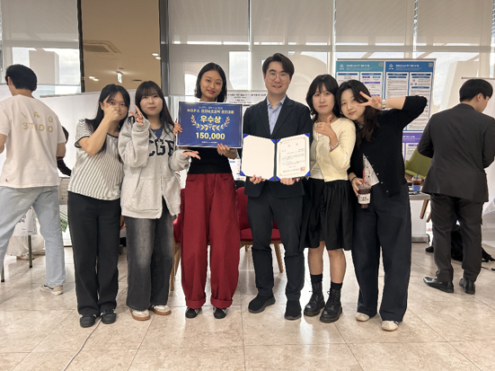
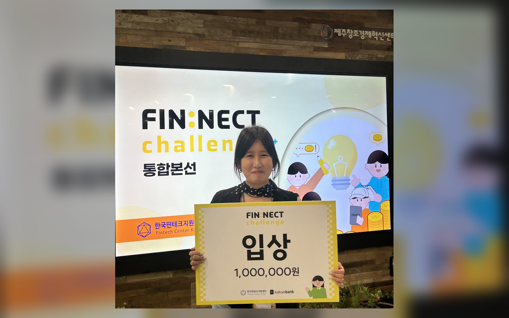
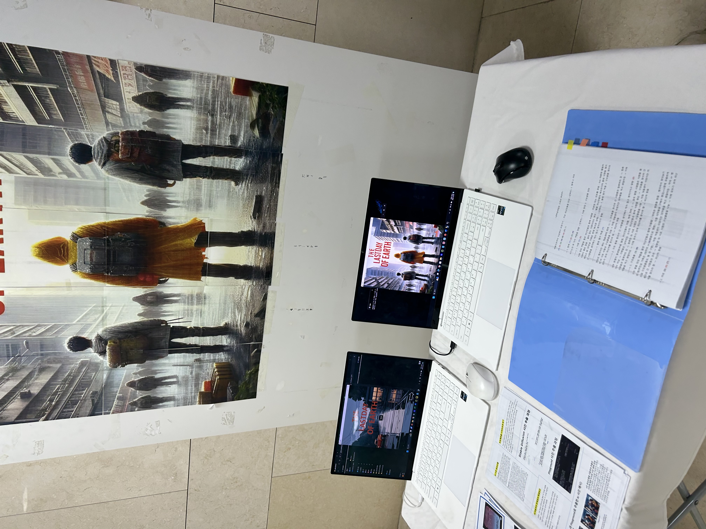
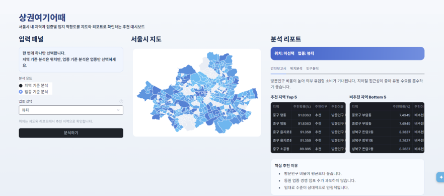
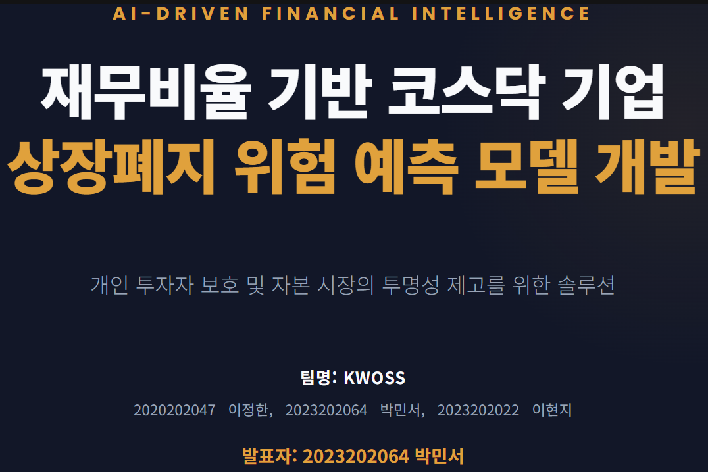

Research
현장 조사와 인터뷰로 사용자의 불안, 습관, 맥락을 먼저 파악합니다.
Park Minseo Portfolio
사용자의 문제를 데이터와 AI 서비스로 연결하는 개발자
시니어 금융 UX, 학교 맞춤형 AI 서비스, 보조공학 재활 시스템, 상권 추천, 금융 리스크 예측까지 실제 사용자의 문제를 조사하고 데이터·모델·앱 구현으로 연결해온 프로젝트 기록입니다.
What I Build
현장 조사와 인터뷰로 사용자의 불안, 습관, 맥락을 먼저 파악합니다.
서비스 흐름, 핵심 기능, 화면 구조를 문제 해결 중심으로 설계합니다.
Android, Flutter, Firebase, AI API를 활용해 검증 가능한 결과물로 구현합니다.
Activities
프로젝트별 문제 정의, 역할, 구현 결과, 성과를 한눈에 볼 수 있도록 정리했습니다.

2025.8~9종이통장, 이체전표, 서명 경험을 AI 금융 앱으로 구현한 시니어 뱅킹 서비스입니다.
 2025.11
2025.11
광운대 인재상인 도전, 탐구, 창의, 소통을 기준으로 면접 답변을 분석하는 Android 면접 연습 앱입니다.

2025.6~9안면 마비 환자의 자가 재활을 돕는 얼굴 랜드마크 기반 AR 피드백 시스템 설계 프로젝트입니다.

2025.6~8고령층 금융 접근성과 복지 정보 사각지대를 함께 해결하기 위해 기획한 시니어 금융·복지 통합 서비스입니다.
 2025.5
2025.5
종이에 쓴 이체 정보를 Vision API로 구조화할 수 있는지 빠르게 검증한 손글씨 송금 UX 해커톤 프로젝트입니다.

2023.9~12Stable Diffusion과 Playground로 만든 그래픽을 활용해 Pygame 선택지 기반 기후 재난 스토리 게임을 구현한 프로젝트입니다.

2026.5서울시 상권 데이터를 통합해 업종별 추천 지역과 지역별 추천 업종을 제공하는 Snowflake 기반 AI 추천 서비스입니다.

2025.11~코스닥 기업 재무비율 데이터를 수집·전처리하고 XGBoost로 상장폐지 위험 신호를 예측한 금융 AI 모델링 프로젝트입니다.